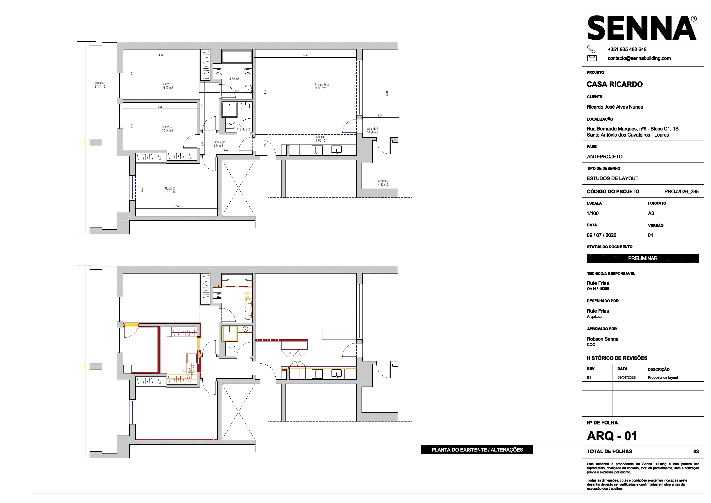
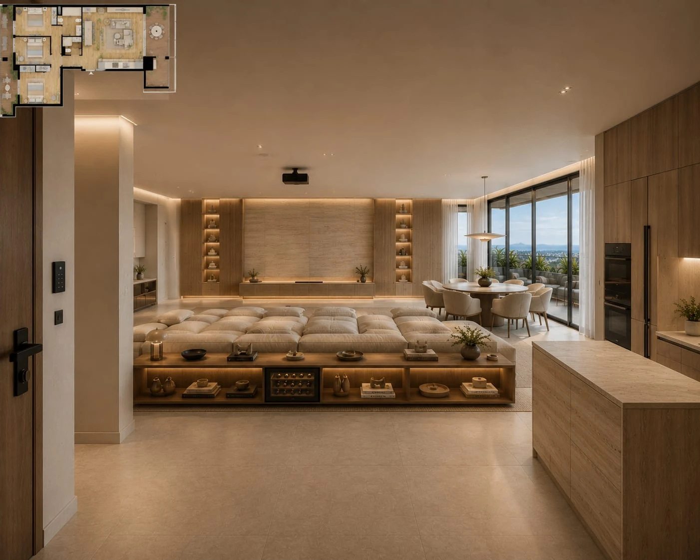
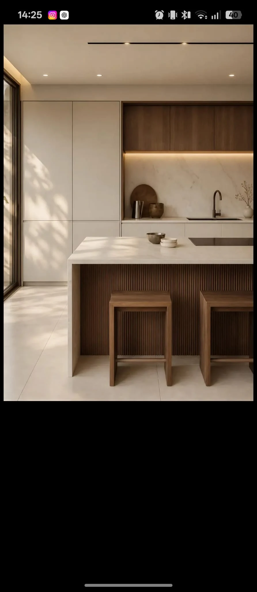
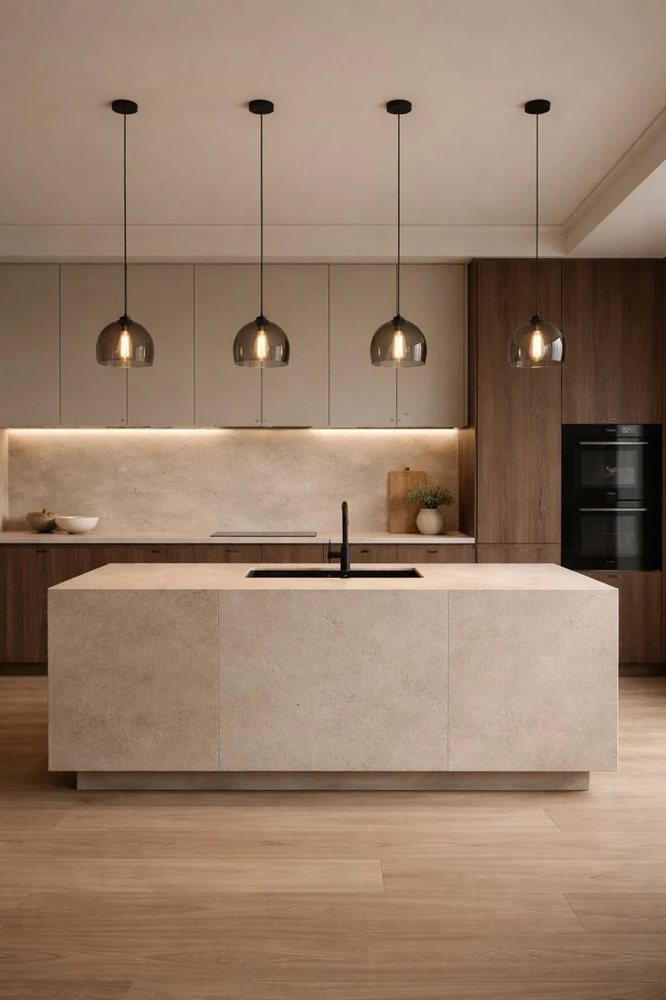
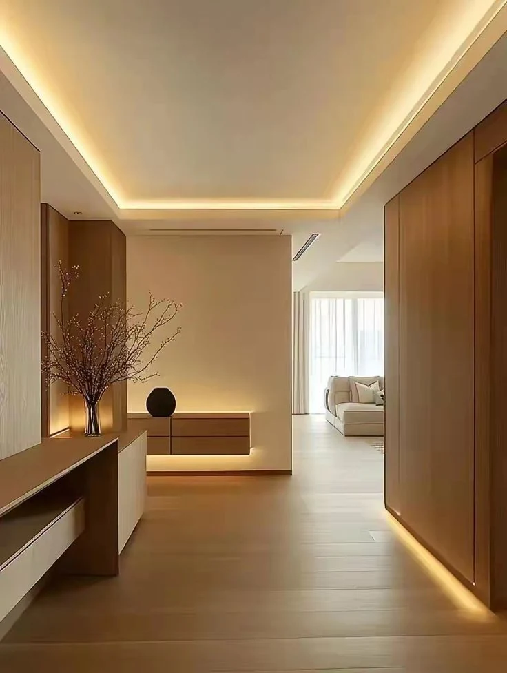
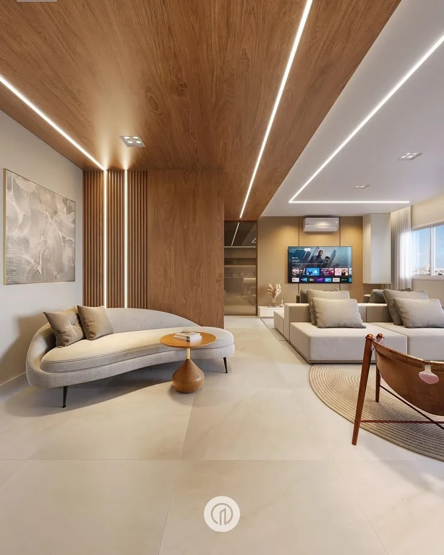
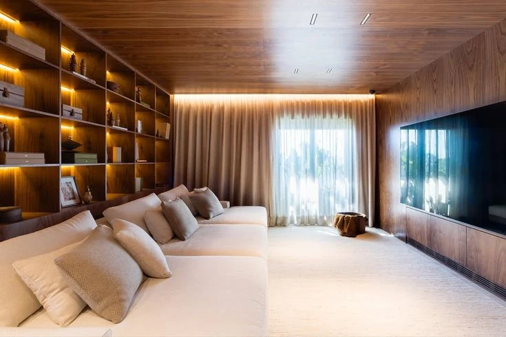

Organização
Mais espaço útil e arrumação pensada para o uso real.
Uma proposta de layout e direção visual pensada para transformar um apartamento novo numa casa verdadeiramente pessoal.
Explorar o projeto ↓O PROJETO
A Casa Ricardo parte de um imóvel completamente novo, com três quartos, sala e cozinha em conceito aberto, casa de banho social e suíte. O objetivo não é corrigir o imóvel, mas dar-lhe identidade, conforto e uma organização alinhada com a rotina de quem vai viver nele.
CONCEITO ORIENTADOR
Organização, conforto, tecnologia discreta e soluções de armazenamento formam uma única linguagem. Cada decisão deve facilitar o quotidiano e tornar a casa mais intuitiva.
Mais espaço útil e arrumação pensada para o uso real.
Ambientes para permanecer, descansar e desfrutar.
Equipamentos presentes quando necessários e discretos quando não estão em uso.
Uma sala preparada para uma verdadeira experiência de cinema.
Proteção visual nas janelas sem perder luz natural.
Carpintaria e detalhes que dão identidade à casa.
DO EXISTENTE À PROPOSTA
As plantas representam a proposta efetiva desenvolvida pela Senna Building. Nesta fase, são apresentadas ao cliente para aprovação ou indicação de alterações.

Leitura do imóvel existente e das zonas de intervenção propostas.
Reorganizada para integrar o frigorífico americano e aumentar a capacidade de armazenamento.
Um dos quartos é reprogramado para criar um closet funcional e um escritório para utilização prolongada.
Sala, jantar e cozinha passam a funcionar como um conjunto coerente, mantendo funções claramente definidas.
Perfis lineares, sancas, focos e luz de mobiliário substituem a iluminação decorativa convencional.
DIREÇÃO VISUAL
As imagens foram fornecidas pelo cliente e orientam apenas a estética, a materialidade, o conforto e a atmosfera. Não representam o layout nem as soluções finais da Casa Ricardo.






REFERÊNCIAS DE INSPIRAÇÃO FORNECIDAS PELO CLIENTE · NÃO REPRESENTAM O PROJETO
MATERIALIDADE
Base luminosa e acolhedora.
Conforto, continuidade e identidade.
Peso visual e sofisticação discreta.
Precisão nos detalhes e equipamentos.
Conforto tátil e equilíbrio acústico.
Direção inicial de materialidade. Marcas, produtos e acabamentos específicos serão desenvolvidos e validados nas etapas seguintes.
ARQUITETURA DA LUZ
O cliente prefere uma leitura limpa do teto e não gosta de candeeiros decorativos. A proposta trabalha a luz em camadas, com apenas uma exceção intencional: o candeeiro sobre a mesa de jantar.
EXPERIÊNCIAS DA CASA
Reformulação da cozinha para integrar o frigorífico americano, aumentar a capacidade de armazenamento e melhorar a organização dos alimentos e dos equipamentos.
Uma sala orientada para o conforto e para uma tela de projeção de 150”, com sofá profundo, controlo de luz e integração discreta dos equipamentos audiovisuais.
Um sistema personalizado de organização, com módulos para diferentes tipos de roupa, acessórios, calçado, iluminação integrada e aproveitamento da altura total.
Um espaço confortável para utilização prolongada, com ergonomia, rede de dados, organização de cabos, controlo de reflexos e linguagem tecnológica sem estética caricatural.
A suíte privilegia tranquilidade e conforto, enquanto o segundo quarto mantém flexibilidade para uso permanente ou como quarto de hóspedes.
Renovação integral de acabamentos, iluminação, mobiliário e duches, com inclusão de duche higiénico e soluções simples de manter.
Um espaço exterior seguro, resistente e fácil de limpar, com zonas de observação, descanso e sombra, integrado na linguagem geral da casa.
DETALHES QUE FACILITAM A VIDA
Mais capacidade sem aumentar o ruído visual.
Elementos feitos à medida para integrar, organizar e ocultar.
Cabos, equipamentos e carregamento incorporados na arquitetura.
Películas nas janelas para proteger o interior sem perder luz.
PRÓXIMA ETAPA
Esta proposta estabelece a organização da casa e a direção inicial de design. Após a validação do cliente, serão desenvolvidos os materiais, mobiliário, carpintarias e soluções técnicas em maior detalhe.
Voltar ao início ↑